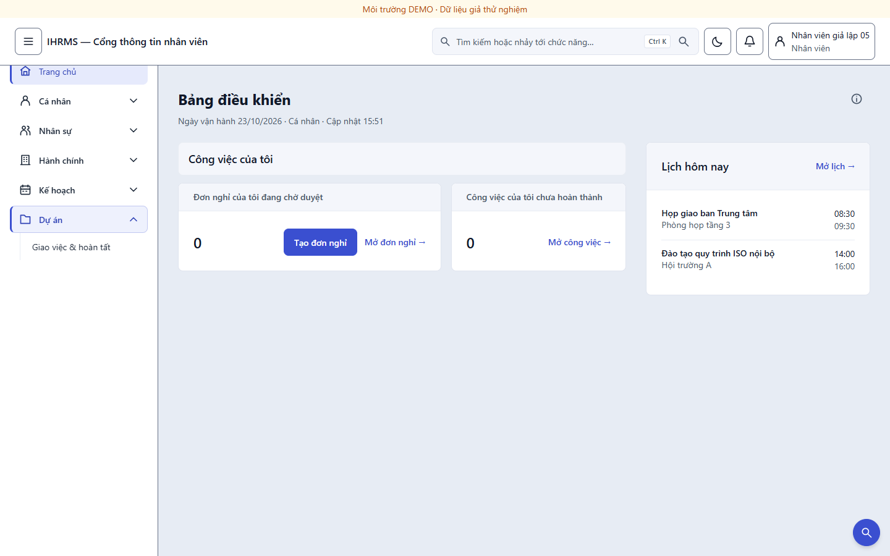
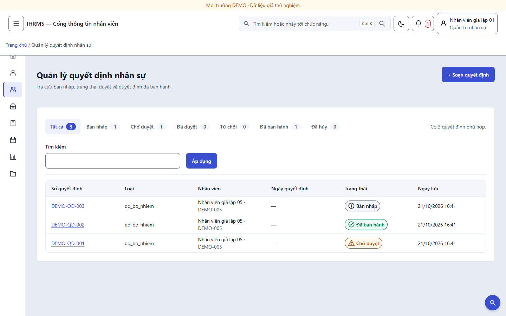
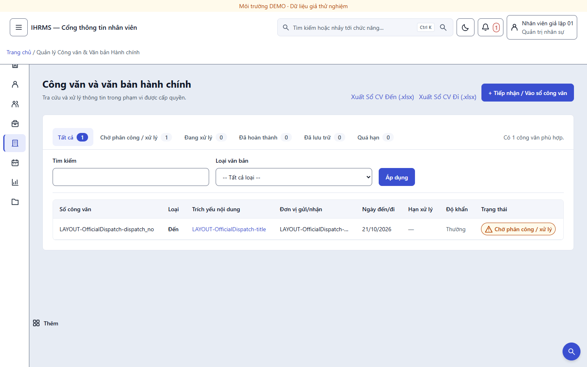
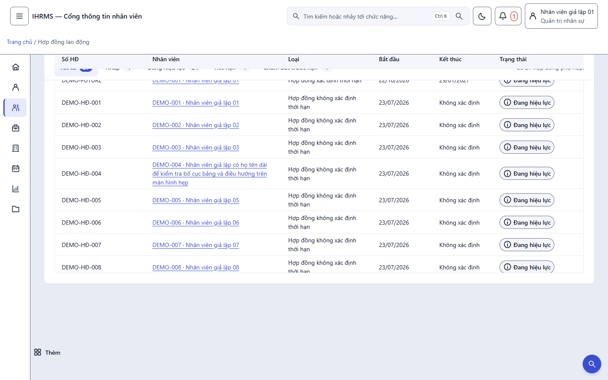
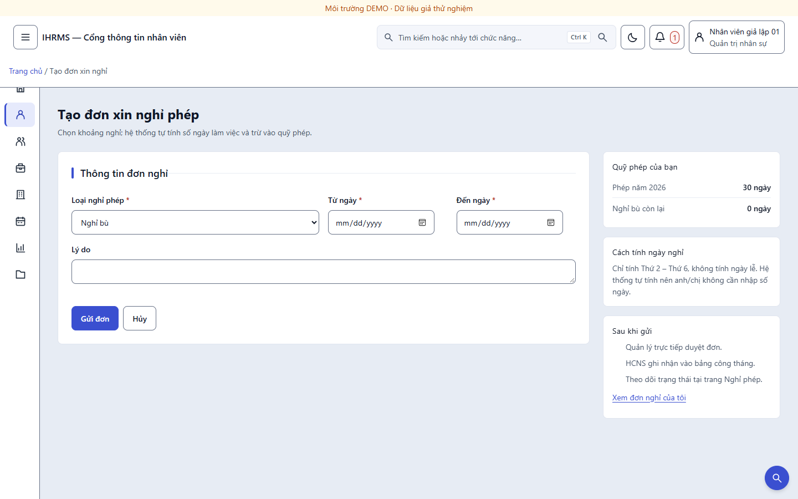
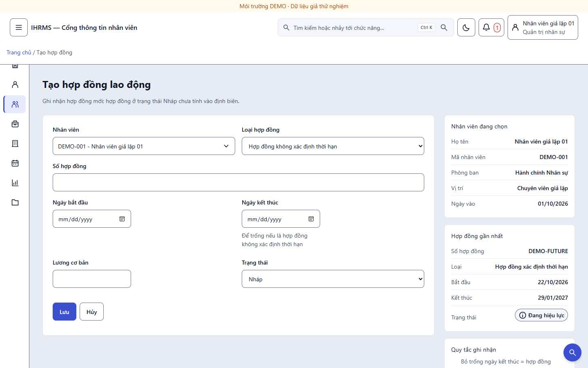
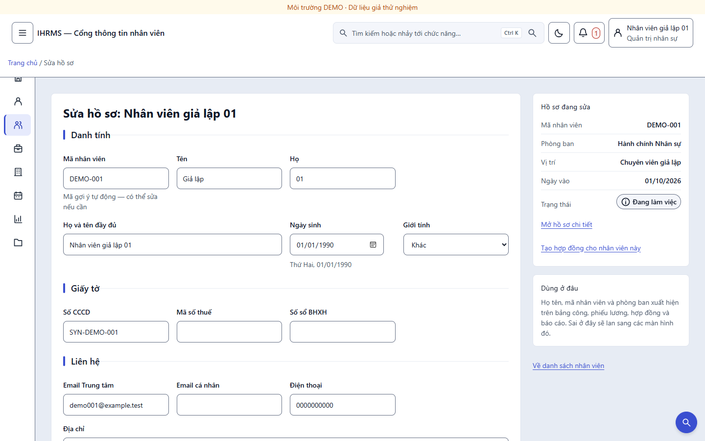
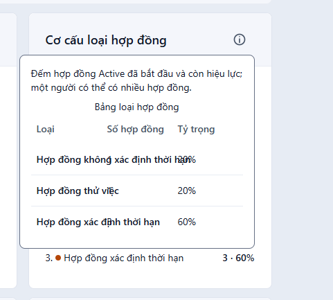
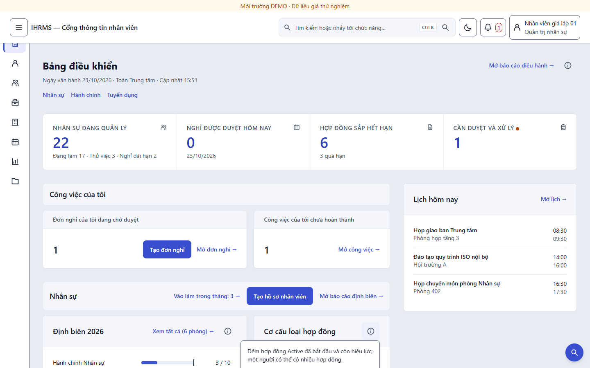

Bạn chốt 5 điểm. Bốn điểm cần sửa mã, một điểm chỉ cần ghi nhận. Tất cả nằm trong một commit trên main, kèm 826 test và 4 cổng giao diện xanh. Điểm đáng chú ý nhất không nằm trong danh sách bạn duyệt: ảnh bạn gửi cho thấy bảng trong popover "Cơ cấu loại hợp đồng" bị chồng chữ — tôi tìm ra nguyên nhân và sửa luôn.
Menu Dự án toàn tài khoản · dải tab trạng thái + toolbar dính · biểu mẫu hai cột + cột ngữ cảnh · trần 25 truy vấn.
Nhãn dài trong bảng popover tràn sang cột số: scrollWidth 93 > clientWidth 77.
Logo và icon PWA giữ nguyên mark xanh lá #279048.
Nhóm "Dự án" trước đây chỉ hiện với vai trò có view_activity_dashboard hoặc can_approve_activity_proposals — nghĩa là nhân viên thường không thấy mục này trong menu, dù họ vẫn có việc được giao. Nay nhóm luôn hiện; bên trong chỉ mở link đúng quyền.
assigned_to_employee=employee), không phải quyền giám sát, nên không lộ dữ liệu của người khác.view_activity_dashboard.approve_activity_proposals, kèm badge số chờ duyệt.Một chỗ dễ hỏng khi đổi quyền menu: ô tìm kiếm toàn ứng dụng có bảng đích danh PAGES riêng, và có test bắt hai bên phải khớp. Tôi đổi cả hai (base.html và views/search.py) để gõ "công việc" vẫn ra trang, và menu vẫn có link.

demo-employee (không có quyền dự án): nhóm "Dự án" hiện, bên trong chỉ có "Giao việc & hoàn tất" — đúng một lối đi, không có mục chết.Đây là thay đổi lớn nhất. Dải lọc cũ có ô chọn "Trạng thái" chiếm một ô trong hàng; nay trạng thái thành một dải tab phía trên, mỗi tab kèm số lượng, và cả dải nằm trong thanh dính dưới thanh trên cùng.
Điểm này quyết định tab có dùng được hay không: nếu đếm sau khi lọc thì mọi tab luôn bằng nhau và vô nghĩa. Hàm _status_tabs() đếm trên queryset trước khi áp bộ lọc trạng thái, và chỉ tốn một truy vấn GROUP BY cho toàn bộ tab. Tab cũng giữ nguyên từ khóa và loại văn bản đang lọc, bỏ page để không rơi vào trang trống.
| Trang | Trước | Sau | Đo được |
|---|---|---|---|
| Quyết định nhân sự | Ô chọn trạng thái trong dải lọc (chỉ hiện với người quản lý) | 7 tab + số lượng, giữ q | Tất cả 3 · Bản nháp 1 · Chờ duyệt 1 · Đã ban hành 1 · còn lại 0 |
| Công văn | Ô chọn trạng thái, thiếu lựa chọn "Đã lưu trữ" | 6 tab sinh thẳng từ OfficialDispatch.STATUS_CHOICES | Tab giữ type=Incoming; không thể lệch với model nữa |
| Hợp đồng lao động | Không có bộ lọc nào, đổ hết 27 dòng | 5 tab + số lượng | Tất cả 27 · Đang hiệu lực 24 · Nháp 1 · Hết hạn 1 · Chấm dứt 1 |
Vì sao chỉ ba trang? Tôi rà toàn bộ 11 trang có dải lọc: chỉ hai trang có bộ lọc trạng thái thật (quyết định, công văn) — phần còn lại lọc theo từ khóa, tháng, năm, khoảng ngày. Cộng thêm trang hợp đồng vốn không có bộ lọc nào. Nên "tab thay một phần bộ lọc" đã phủ hết bề mặt có trạng thái, không phải làm dở.


Thanh công cụ dùng position:sticky với top:var(--ui-shell-header-height) — biến này do shell cập nhật theo chiều cao thật của thanh trên cùng, nên không bị che khi thanh trên cùng cao lên (breadcrumb xuống dòng). Đo trên trình duyệt thật:
| Phép đo | Kết quả |
|---|---|
position / top của thanh | sticky / 129px = đúng chiều cao thanh trên cùng đo được (129px) |
| Sau khi cuộn 600–700px | Thanh vẫn ở y = 129 trong khi bảng chạy bên dưới |
| Tràn ngang ở 390px | Không (scrollWidth ≤ innerWidth); tab cuộn trong chính nó |

Trái là biểu mẫu, phải là cột ngữ cảnh chỉ đọc: quỹ phép, hồ sơ nhân viên đang chọn, hợp đồng gần nhất, quy tắc ghi nhận. Cột phải không chứa một trường nhập nào — có test khoá điều này, vì nếu nhét input vào đó thì nó thành cột thứ hai của biểu mẫu và phá hợp đồng lưới trường.
Cột ngữ cảnh dính theo cuộn ở màn ≥1280px, xuống dưới biểu mẫu ở màn hẹp. Lưới trường bên trong vẫn chạy theo container query: đo ở 1756px, cột biểu mẫu rộng 1.032px nên vẫn đủ 4 cột trường — không bị ép xuống 3 cột vì có thêm cột phải.



Vì sao cột ngữ cảnh có giá trị thật, không phải trang trí: trước đây muốn biết "nhân viên này đang có hợp đồng nào" để tạo hợp đồng nối tiếp, người nhập phải mở tab khác rồi quay lại — và mất dữ liệu đang nhập. Nay thông tin đó nằm ngay cạnh ô nhập.
Ảnh bạn gửi có hai chỗ chữ đè lên nhau trong popover "Cơ cấu loại hợp đồng" và "Định biên 2026". Đây là lỗi thật, không phải ảnh bị nén:
ui_controls.css (layer base) đặt table:not(.hcns-paper *) th { white-space: nowrap } cho mọi bảng dữ liệu. Trong popover rộng 340px, nhãn "Hợp đồng không xác định thời hạn" không xuống dòng nên tràn sang cột số.table-layout:fixed mà không khai bề rộng cột, nên 4 cột chia đều 77px — không cột nào đủ cho nhãn.Đo trước khi sửa: scrollWidth 93 > clientWidth 77 trên ô nhãn. Sau khi sửa: white-space: normal, cột nhãn 46% (141px), scrollWidth = clientWidth = 141 — không còn tràn. Thêm box-shadow để popover đọc ra là lớp nổi, và max-height: min(70vh, 30rem) để không chạy khỏi màn hình khi mở từ thẻ sát đáy.


| Quyết định | Đã làm |
|---|---|
| Duyệt trần 25 truy vấn | Giữ nguyên mã; ghi rõ trong test_home_dashboard.py rằng chủ dự án đã duyệt mức 25 ngày 23/10/2026, kèm lý do (khối "Lịch hôm nay" thêm đúng một truy vấn). Đo lại: trang chủ vẫn ở 25, không phát sinh thêm. |
| Logo giữ nguyên | Không chạm img/logo.png và ihrms-pwa-192/512.png (mark xanh lá #279048). Ghi vào nhật ký dự án để lần sau không ai "tiện tay" đổi sang Chàm Đông. |
| Cổng | Kết quả | Ghi chú |
|---|---|---|
ops/run_tests.py --backend sqlite | 826 test OK (7 skip) | +9 test mới cho tab và biểu mẫu hai cột |
ops/run_layout_alignment_audit.py | 150 route / 6.881 ca / 0 vi phạm / 0 lỗi | 9 tài khoản × 7 độ rộng × sáng/tối |
ops/check_ui_contrast.py | 220 cặp / 0 lỗi | Chữ nhỏ nhất 5,20:1 (sáng) · 5,71:1 (tối) |
ops/run_browser_uat.py --layout-only | 128 kiểm tra / 32 ảnh / 0 lỗi | Bấm "Sửa hồ sơ" nên có chạm biểu mẫu đã đổi bố cục |
ops/run_dashboard_layout_uat.py | 4.572 kiểm tra / 48 ảnh / 0 lỗi | Chạy lại sau khi sửa popover — không hồi quy |
Ba test cũ đã phải sửa, và đây là lý do chính đáng: test_project_layout khẳng định dải lọc công văn có đúng ba trường q,type,status. Sau khi trạng thái rời dải lọc sang tab, khẳng định đó sai theo thiết kế mới nên tôi cập nhật thành q,type và q kèm ghi chú quyết định. Tương tự, tests_app_shell và test_global_search phải cập nhật vì "Giao việc" nay hiện với mọi vai trò. Không có cổng nào bị nới.
main cục bộ, chưa push. Tôi chờ bạn xem ảnh rồi push một lượt.status_tabs = _status_tabs(...)) + đổi ô chọn thành {% include "ui/status_tabs.html" %} + bọc trong .ui-list-toolbar. Trang nào chưa có bộ lọc trạng thái thì phải thêm bộ lọc trước, nên tôi không làm hàng loạt khi chưa có nhu cầu thật.